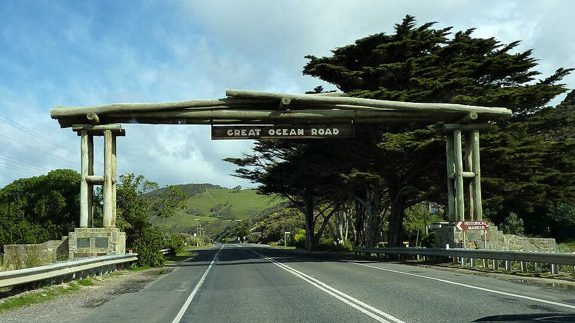
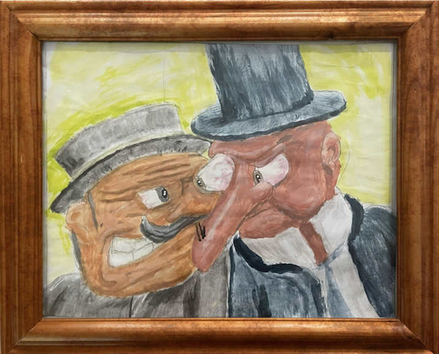
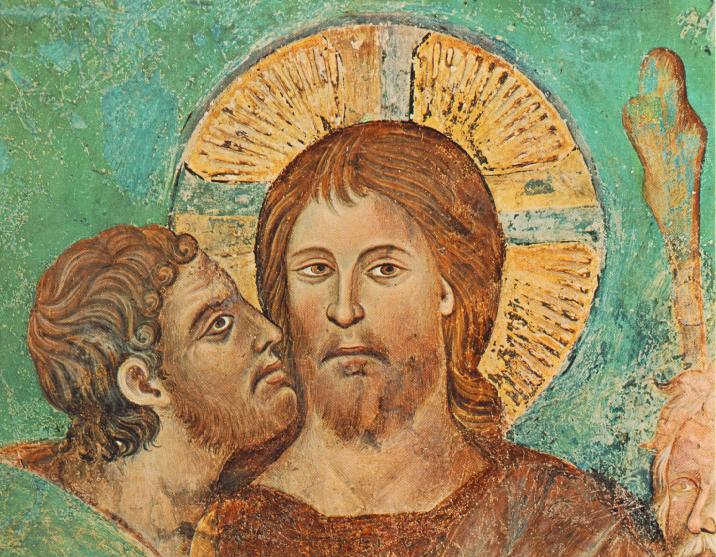
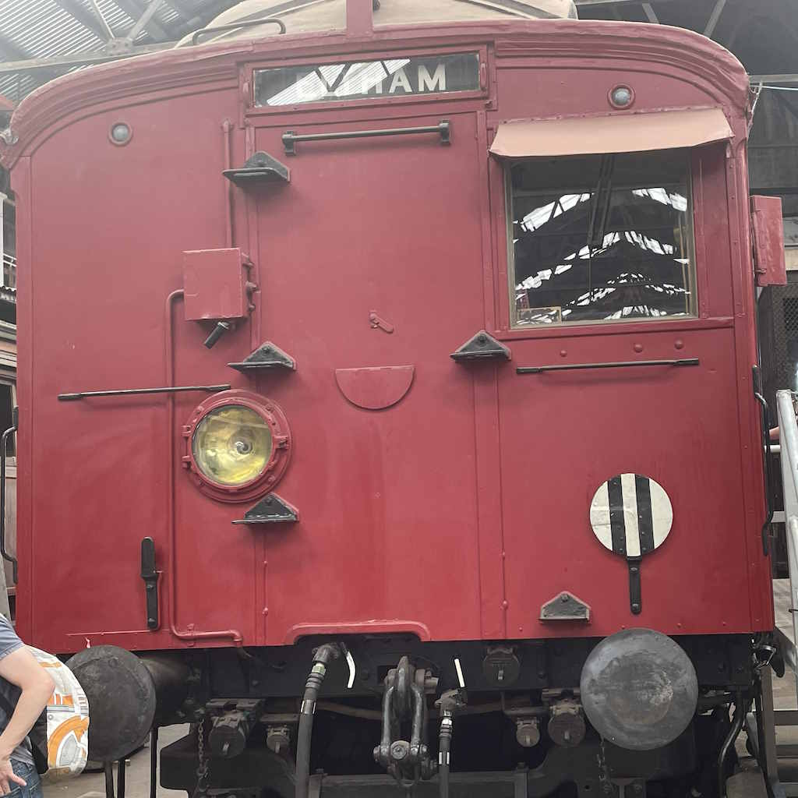
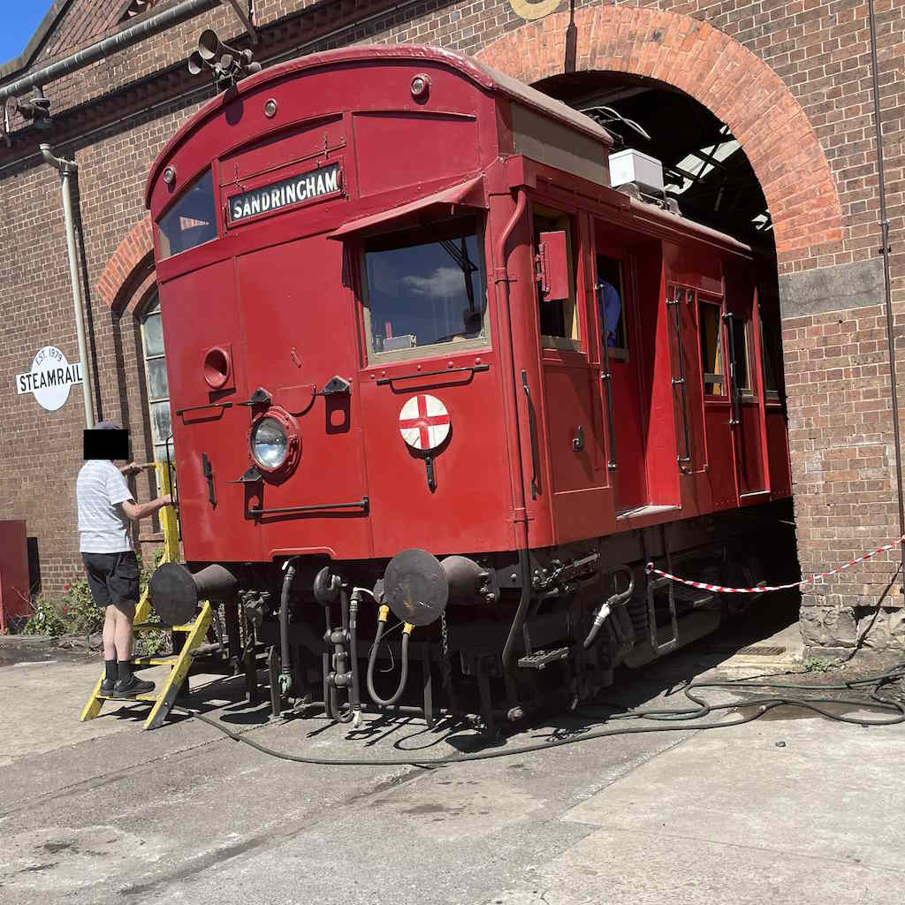

to be bunkerized and built upon, with asbestos (yuck!).

image by "Bobak Ha'Eri" @wikipedia
The mansion itself is based of a several games to be unspecific; one about a green wearing brother (don't sue!), and one about a neighbour that was better in the alpha phase!!
This picture is.. Jesus...

no for real its based off a Jesus painting

Public Domain Image
after you whipped the boss, a train come in to take you to the next level. And the train? It is a Tait, A.K.A. a Red Rattler! It operated in Melbourne suburbs, but now its its only for historical trips and monuments... the picture is of the latter!

